Sistemas especializados para fijación de Cadera
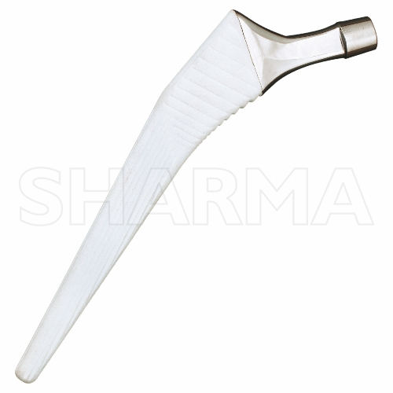
Material SS (ISO 5832-1), Aleación de titanio (ISO 5832-3).
Ver detalles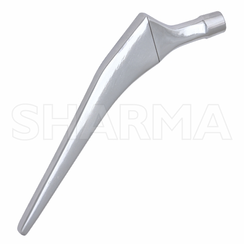
Material LVM, Co. Cr., Aleación de titanio (ISO 5832-3).
Ver detalles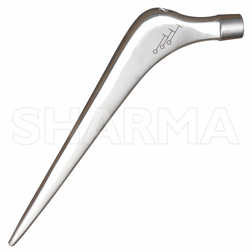
Material SS (ISO 5832-1).
Ver detalles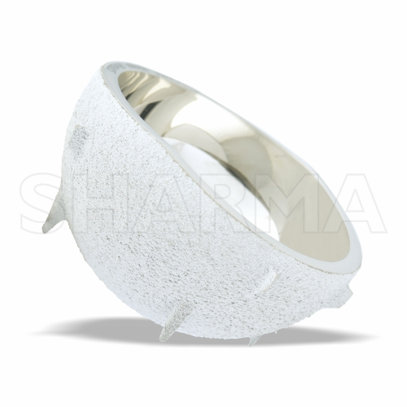
Adecuado para las copas acetabulares no cementadas de doble movilidad son adecuadas para pacientes con mayor riesgo de luxación de cadera, como aquellos con trastornos neuromusculares, traumatismos previos de cadera, cirugías de revisión o ciertas anomalías anatómicas..
Ver detalles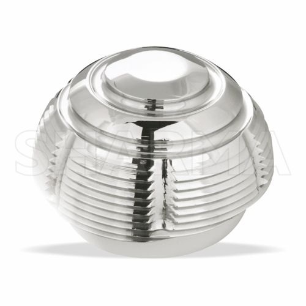
Adecuado para una copa acetabular cementada de doble movilidad es particularmente adecuada para pacientes con pérdida ósea acetabular, aquellos con alto riesgo de luxación y aquellos con mala calidad ósea.
Ver detalles
Adecuado para los revestimientos de movilidad dual se utilizan principalmente en la artroplastia total de cadera (ATC) para reducir el riesgo de luxación, particularmente en los casos en que los pacientes tienen un mayor riesgo de inestabilidad.
Ver detalles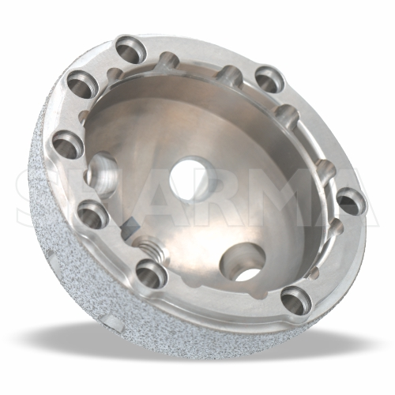
Adecuado para las copas acetabulares de revisión no cementadas son adecuadas para revisiones acetabulares donde hay una reserva ósea adecuada para proporcionar estabilidad inicial y cuando el cirujano busca la fijación biológica. Son particularmente útiles en casos de aflojamiento aséptico, osteólisis o malposicionamiento de la copa anterior, y cuando se requiere injerto óseo.
Ver detalles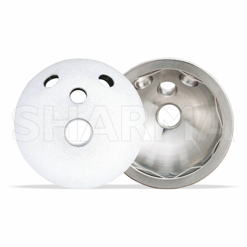
Adecuado para la copa acetabular no cementada, que depende del crecimiento óseo hacia el interior para su fijación, suele ser adecuada para adultos con suficiente reserva ósea sometidos a artroplastia total primaria de cadera (ATC) debido a afecciones como osteoartritis o fracturas, donde el hueso acetabular puede proporcionar estabilidad inicial.
Ver detalles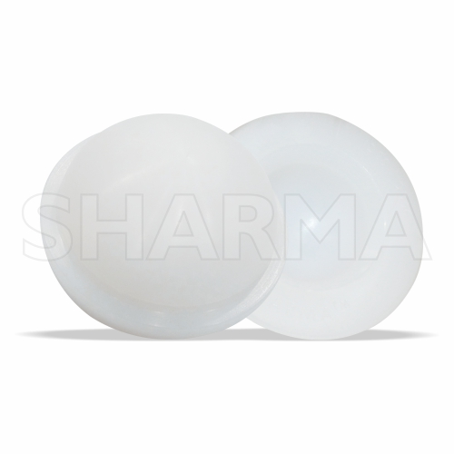
Los revestimientos acetabulares son un componente crucial de las copas acetabulares sin cemento, que están indicadas para diversas formas de artritis, incluida la osteoartritis, la artritis postraumática y la artritis inflamatoria. Están diseñados para proporcionar estabilidad inicial y soporte para la articulación de la cadera en los casos en que exista suficiente reserva ósea para soporte mecánico. Los revestimientos pueden ser neutros o tener un labio o un borde elevado para mejorar la estabilidad, especialmente en casos propensos a dislocarse.
Ver detalles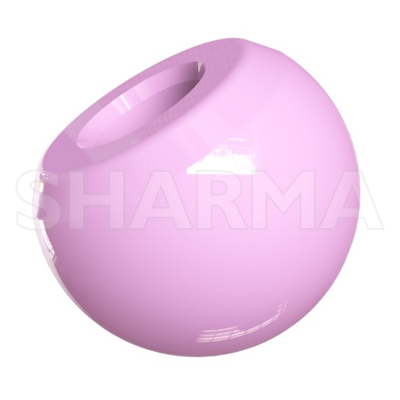
Adecuado para un reemplazo total de cadera, la "cabeza interna" se refiere al componente de la cabeza femoral, que es la bola protésica que reemplaza la cabeza femoral natural. El tamaño ideal de la cabeza femoral en la artroplastia total de cadera es un equilibrio entre maximizar la estabilidad y el rango de movimiento y minimizar las complicaciones. Las cabezas más grandes se asocian con tasas de dislocación más bajas.
Ver detalles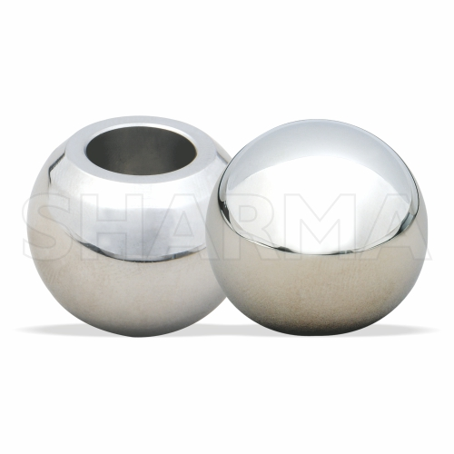
Adecuado para Un reemplazo total de cadera, la "cabeza interna" se refiere al componente de la cabeza femoral, que es la bola protésica que reemplaza la cabeza femoral natural. El tamaño ideal de la cabeza femoral en la artroplastia total de cadera es un equilibrio entre maximizar la estabilidad y el rango de movimiento y minimizar las complicaciones. Las cabezas más grandes se asocian con tasas de dislocación más bajas.
Ver detalles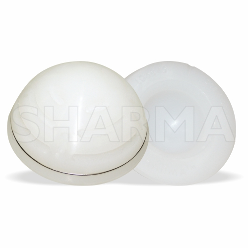
Adecuado para Las copas acetabulares cementadas son una opción adecuada para el reemplazo total de cadera, particularmente en pacientes de mayor edad o aquellos con mala calidad ósea con mayor riesgo de fractura.
Ver detalles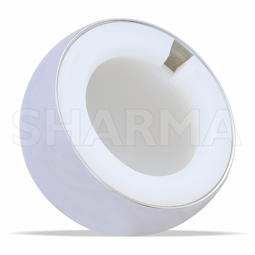
Adecuado para No todos los bipolares funcionan como los bipolares autocentrantes. La diferencia es la excentricidad positiva. A medida que se aplica fuerza hacia abajo, los centros se alinean con la posición anatómica adecuada y la distribución de carga adecuada. En términos de desgaste, la articulación dual bipolar utiliza articulación interna primaria para ayudar a reducir la articulación acetabular secundaria y el desgaste acetabular asociado.
Ver detalles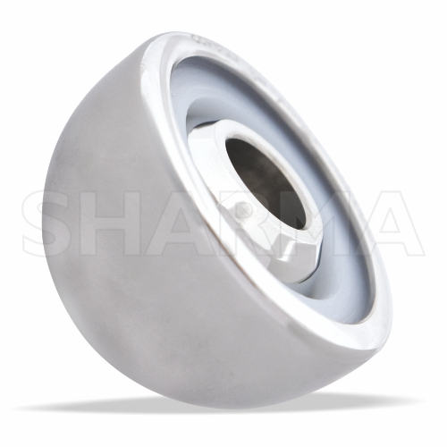
Adecuado para Las copas bipolares modulares se utilizan comúnmente en pacientes de edad avanzada que han experimentado una fractura desplazada del cuello femoral, un tipo de fractura de cadera que puede ocurrir debido a caídas u otros traumatismos.
Ver detalles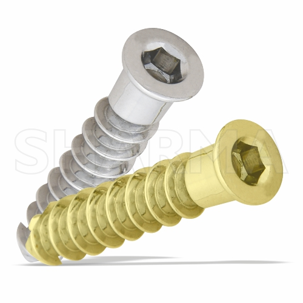
Adecuado para Los tornillos de copa acetabular se utilizan en la artroplastia total de cadera sin cemento para mejorar la estabilidad primaria, particularmente en casos con calidad ósea marginal. Pueden mejorar la estabilidad inicial. Los cirujanos pueden optar por utilizar tornillos en los casos en que la calidad ósea esté comprometida, como en cirugías de revisión o en pacientes con afecciones como osteoartritis o artritis postraumática.
Ver detalles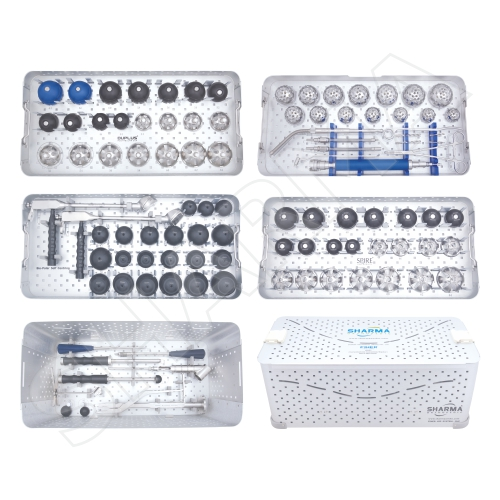
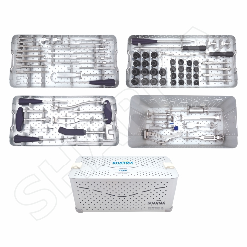
Nuestro equipo está listo para ayudarte a elegir la solución adecuada.
Solicitar información